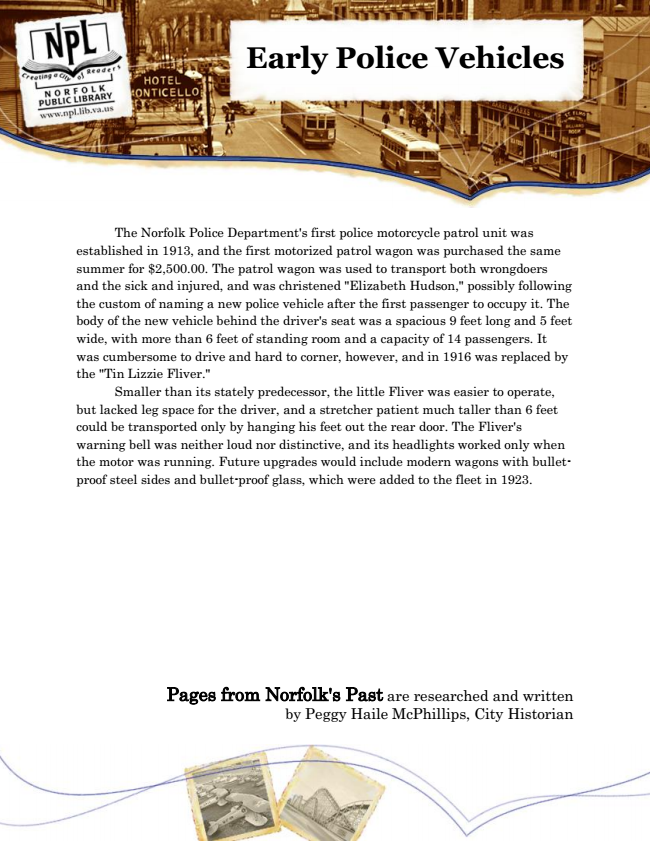

Early Police Vehicles
The Norfolk Police Department's first police motorcycle patrol unit was established in 1913, and the first motorized patrol wagon was purchased the same summer for $2,500.00. The patrol wagon was used to transport both wrongdoers and the sick and injured, and was christened "Elizabeth Hudson," possibly following the custom of naming a new police vehicle after the first passenger to occupy it. The body of the new vehicle behind the driver's seat was a spacious 9 feet long and 5 feet wide, with more than 6 feet of standing room and a capacity of 14 passengers. It was cumbersome to drive and hard to corner, however, and in 1916 was replaced by the "Tin Lizzie Fliver."
Smaller than its stately predecessor, the little Fliver was easier to operate, but lacked leg space for the driver, and a stretcher patient much taller than 6 feet could be transported only by hanging his feet out the rear door. The Fliver's warning bell was neither loud nor distinctive, and its headlights worked only when the motor was running. Future upgrades would include modern wagons with bullet- proof steel sides and bullet-proof glass, which were added to the fleet in 1923.
Pages from Norfolk's Past are researched and written by Peggy Haile McPhillips, City Historian